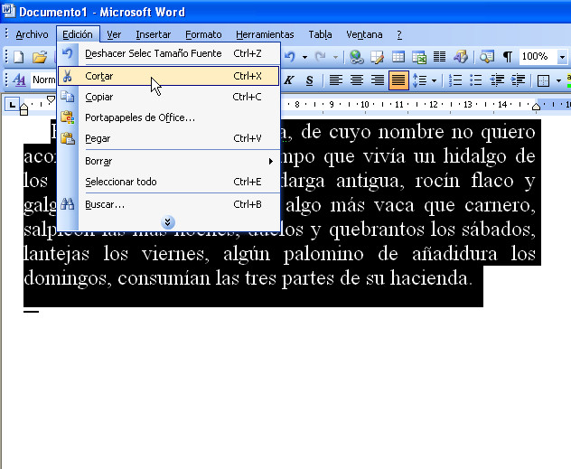
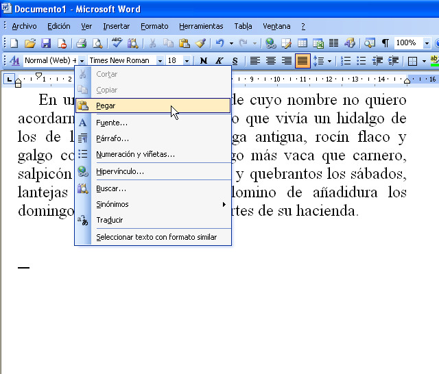
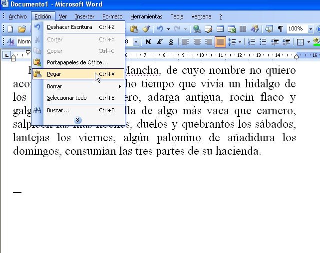
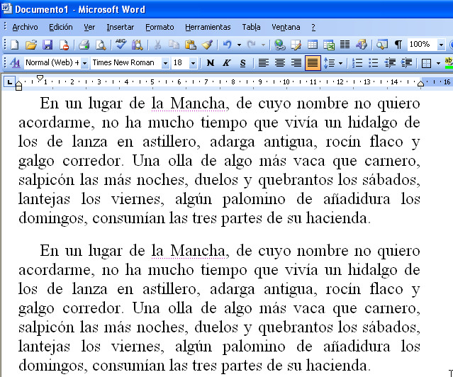
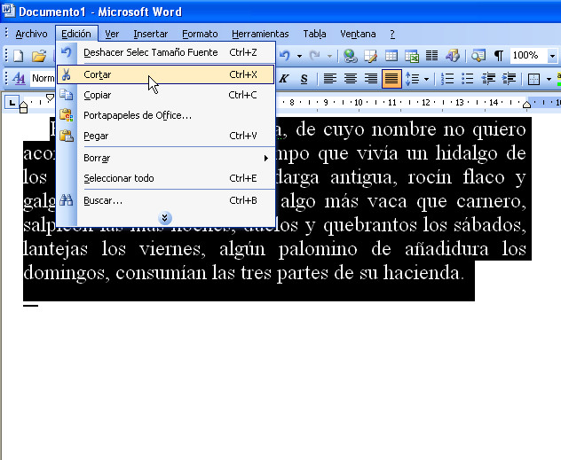
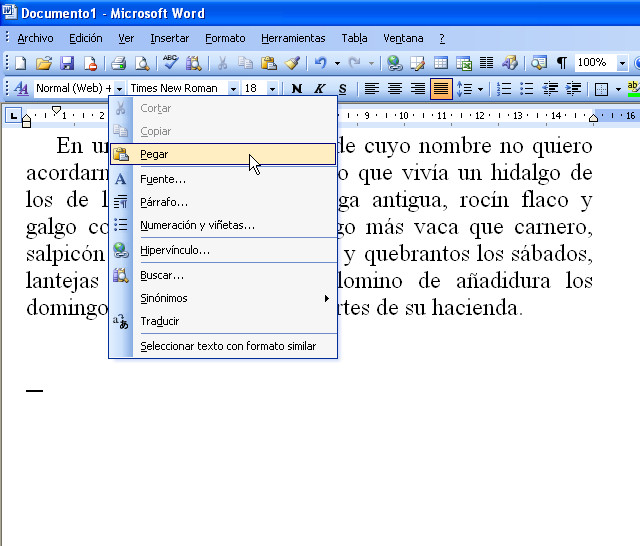
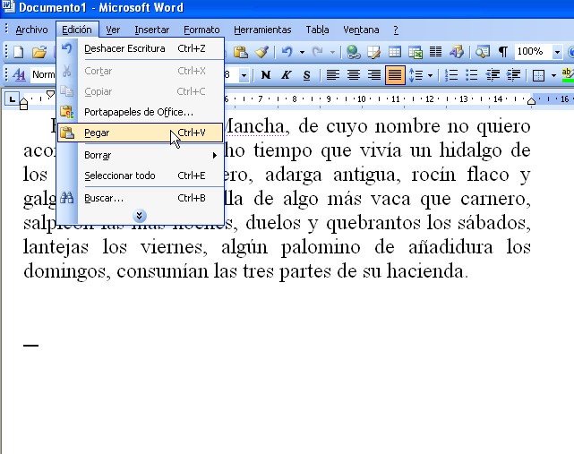
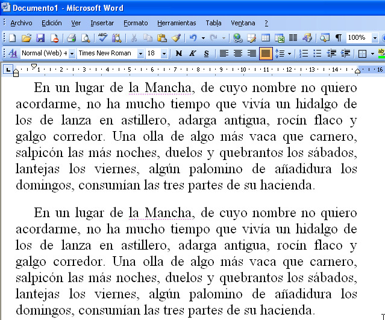

Universitat per a Majors
Word
Edición básica en Word
Apreta la tecla → para avanzar.

Procesador de textos para sistemas operativos Windows, nos permite realizar documentos de texto de manera cómoda y sencilla con un acabado muy estético.
Hasta ahora hemos visto:
En la sesión de hoy practicaremos los siguientes conceptos:
Cambia de foto con las teclas: ↑ y ↓
 







Cambia de foto con las teclas: ↑ y ↓
Cualquier error que cometamos en Word lo podemos arreglar gracias a la herramientas de Deshacer.
Podemos volver atrás cualquier acción que hemos realizado desde la última vez que grabamos el documento.
Recuerda! Sólo podremos deshacer hasta que grabemos.
Cambia de foto con las teclas: ↑ y ↓
Cambia de foto con las teclas: ↑ y ↓
Cambia de foto con las teclas: ↑ y ↓
Cualquier error que cometamos en Word lo podemos arreglar gracias a la herramientas de Deshacer.
Podemos volver atrás cualquier acción que hemos realizado desde la última vez que grabamos el documento.
Recuerda! Sólo podremos deshacer hasta que grabemos.
Cambia de foto con las teclas: ↑ y ↓